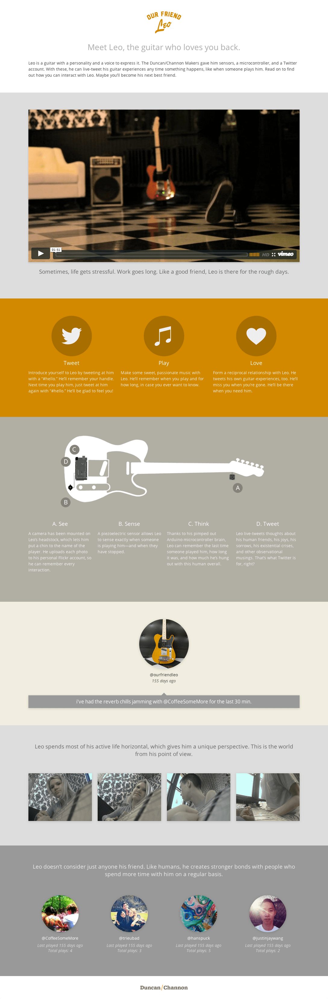

Our Friend Leo
Our Friend Leo was born from an eight week collaborative exploration of human-object relationships. In an effort to enhance the formerly one-way love affair musicians have with their instruments, Leo exists as a proof-of-concept that the special relationships we have with things can actually be reciprocated by the objects of our affections.
Developed by the Makers at Duncan/Channon. Watch the video.
